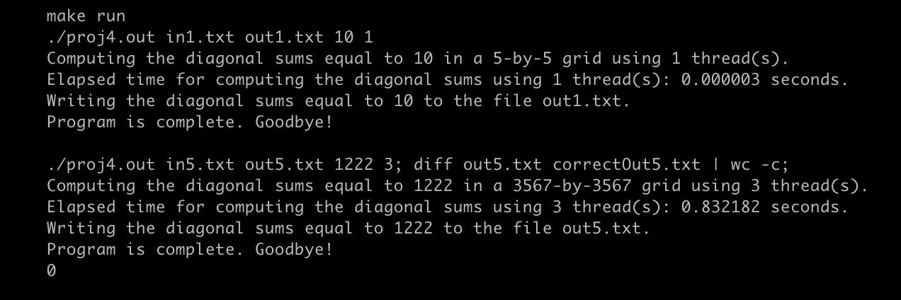

⁝ Lee Alexander Dix ⁝

1570 Bob Godfrey Rd • Athens, GA • (706) 549-1995 • leea509@aol.com
Passionate Computer Science, MIS dual graduate with a focus on cybersecurity and artificial intelligence, seeking an entry-level position in a forward-thinking tech company.
Education
The University of Georgia
, Terry College of Business- Athens, GA
- Bachelor of Business Administration in
Management of Information Systems
- December 2017
- Major GPA: 3.68/4.00
The University of Georgia
, Franklin College of Arts and Sciences- Athens, GA
- Bachelor of Science in
Computer Science
- May 2025
- Major GPA: 3.76/4.00
- Overall GPA: 3.32/4.00
Honors and Awards
- Eagle Scout
- November 2013
- Lean Six Sigma Yellow Belt Certification
- March 2016
- Japanese Language Proficiency Test N3 Certificate
- December 2022
Skills
Programming Languages:
C, C++, C#, Java, SQL, RInternet:
HTML, CSS, JS, XML, Java ServerSoftware:
Visual Studio, GitHub, VS Code, ArcGIS, MS Excel, MS Word, MS PowerPoint, JSP, Servlet, MySQL, Qlik, MS Visio, Signavio (BPMN)Operating Systems:
Windows 7 & Later, Mac OSXLanguages:
English, Japanese
Leadership and Experience
Assistant Language Teacher
at Interac HokkaidoMarch 2020 - March 2023
Conveyed
meaning clearly using a foreign language and through forms of non-verbal communicationTaught
Japanese elementary school children English as a foreign languageWorked
as a cultural ambassador to encourage interest in foreign culturesCreated
English education lesson plans for a range of agesImprovised
class activities with little to no noticeAssisted
with the everyday running of the school
GIS Analyst
at GIS1January 2018 - March 2020
Worked
with ArcGIS software to visualize geographic data in clear and concise waysHelped
annotate street maps for various county level jurisdictionsWorked
with county parcel data to discover errors in GIS databases
Assistant PM/Student Worker
at UGA ITOS App Development & Data AnalyticsJuly 2014 - December 2017
Served
as an assistant to the Project Manager on various projectsOrganized
efforts and streamlined processes for application progressBuilt
mockups for various projects to give clients an early visual representation of the applicationDocumented
team efforts with programs including MS Word, OneNote, and MS VisioUsed
Qlik to visualize data in clear and concise waysTrained
newer student workers on the programs used to both manage the team and analyze data
Cashier
at Carmike Cinemas (now AMC Theaters)May 2013 - July 2014
Developed
client interaction skillsHandled
customer phone callsHandled
customer complaints
Projects
Perilmecium
Developed
a game for a Game Jam in under 96 hoursDesigned
animations, coded the player controller, and implemented AI for the enemiesWorked
with a team of 3 to complete a working proto-type in time
Personal Blog
Designed
, coded, and published a website to use as a personal blogPublished
to AWS for family and friends to view

Calculating Diagonal Sums
Built
a project in Systems Programming class to calculate the sum of the diagonal integers in a 2D array and copy the values that sum to an entered sumDeveloped
in C and coded in a UNIX environmentDesigned
an algorithm that ran in O(n2) and could calculate even large arrays in under a second